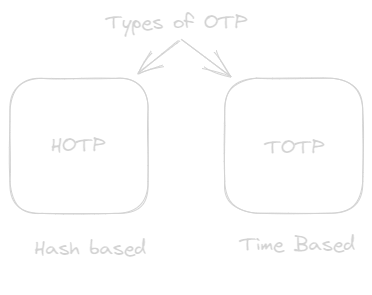
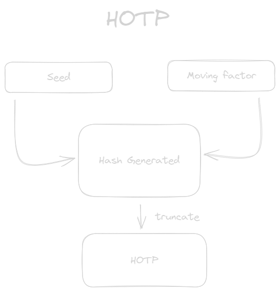
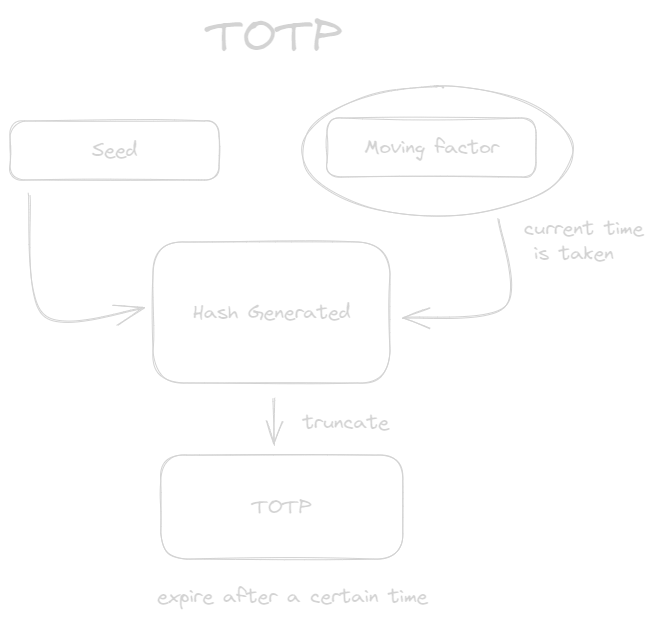

Exploring Two-Factor Authentication (2FA) with OTP
This blog is my finding on otp based authentication used in the digital world, that I encounter in the CTF problem.
Published: 09 August, 2023
Reading Time: 4 minute read
I was solving a CTF, where I encountered a OTP based problem to be solved under the sub topic called Infrastructure Security Assessment . Where the webpage had a login page whose path was found in the robots.txt file, that asked for username and password. Just trying some default credential gave me the access admin:admin. After that the webpage asked for a 6 digit otp, it was a dead end for a while, till I found a solution. Before going through the my finding and the solution to the problem. Lets first understand, what is OTP, why it is used and are there alternatives?
What is a OTP ?
With the increase in the cyber threat out in the digital world, MFA (Multi Factor Authentication) has gained popularity. MFA is just a two step verification on based various authentication factor that could be knowledge factors, possession factors, location factors and behavior factors.
One of many method of MFA is the use of the OTP (One Time Password). The OTP is a code of any size, usually 4 or 6 in size that will expire after use or expire based on the some conditions. It is a popular choice because the ease it provides for the users and the developer to
How does a OTP works ?
The OTP as mentioned before is a one time password that has two main components seed and moving factor. The seed a secret key that must be kept safe in the authentication server and moving factor is a counter that is in sync with the OTP generated in the authentication server. This is overview of how generally the OTP works. But the way how the moving factor works give rise to types of OTP ,which are HOTP and TOTP

HOTP
The HOTP is a Hash based Message Algorithm Code (HMAC) , where the seed is a secret key that is kept in the authentication server and moving factor is the counter that is the used in sync with OTP code. It is a cryptographic key that is hashed which is not easy to be cracked to get the secret key/seed back. The hashing algorithm like SHA-1 ,SHA-256,etc is used in the making of the hash which is truncated to get the HOTP.

TOTP
The TOTP is a time based OTP where the moving factor is a time based token that takes checks the current time and sets an expiration time to the token. Now the authentication server is in sync with the expiration time and it is called the timestep.

CTF Solution
Coming back to the solution, when I saw the otp page, I tried to randomly insert 6 digit numbers . Nothing worked and I thought of brute forcing it , it gave me a second thought that it will be a tedious work with a large number of otp to brute force . I didn't find anything useful to try. It was only when I noticed there was a ftp port available that had anonymous login. Quickly accessed the ftp to the server and found a sql file.
-- MariaDB dump 10.19 Distrib 10.4.27-MariaDB, for Linux (x86_64)
--
-- Host: localhost Database: CTF2
-- ------------------------------------------------------
-- Server version 10.4.27-MariaDB
/*!40101 SET @OLD_CHARACTER_SET_CLIENT=@@CHARACTER_SET_CLIENT */;
/*!40101 SET @OLD_CHARACTER_SET_RESULTS=@@CHARACTER_SET_RESULTS */;
/*!40101 SET @OLD_COLLATION_CONNECTION=@@COLLATION_CONNECTION */;
/*!40101 SET NAMES utf8mb4 */;
/*!40103 SET @OLD_TIME_ZONE=@@TIME_ZONE */;
/*!40103 SET TIME_ZONE='+00:00' */;
/*!40014 SET @OLD_UNIQUE_CHECKS=@@UNIQUE_CHECKS, UNIQUE_CHECKS=0 */;
/*!40014 SET @OLD_FOREIGN_KEY_CHECKS=@@FOREIGN_KEY_CHECKS, FOREIGN_KEY_CHECKS=0 */;
/*!40101 SET @OLD_SQL_MODE=@@SQL_MODE, SQL_MODE='NO_AUTO_VALUE_ON_ZERO' */;
/*!40111 SET @OLD_SQL_NOTES=@@SQL_NOTES, SQL_NOTES=0 */;
--
-- Table structure for table `users`
--
DROP TABLE IF EXISTS `users`;
/*!40101 SET @saved_cs_client = @@character_set_client */;
/*!40101 SET character_set_client = utf8 */;
CREATE TABLE `users` (
`number` varchar(100) NOT NULL, `username` varchar(100) NOT NULL, `password` varchar(100) NOT NULL, `TOTP` varchar(100) NOT NULL
) ENGINE=InnoDB DEFAULT CHARSET=utf8mb4 COLLATE=utf8mb4_general_ci;
/*!40101 SET character_set_client = @saved_cs_client */;
--
-- Dumping data for table `users`
--
INSERT INTO `users` VALUES ('1', 'admin', 'admin', 'YDTN2JY6CWKSK6PB3HNOAY4APASUVREM');
UNLOCK TABLES;
UNLOCK TABLES;
/*!40103 SET TIME_ZONE=@OLD_TIME_ZONE */;
/*!40101 SET SQL_MODE=@OLD_SQL_MODE */;
/*!40014 SET FOREIGN_KEY_CHECKS=@OLD_FOREIGN_KEY_CHECKS */;
/*!40014 SET UNIQUE_CHECKS=@OLD_UNIQUE_CHECKS */;
/*!40101 SET CHARACTER_SET_CLIENT=@OLD_CHARACTER_SET_CLIENT */;
/*!40101 SET CHARACTER_SET_RESULTS=@OLD_CHARACTER_SET_RESULTS */;
/*!40101 SET COLLATION_CONNECTION=@OLD_COLLATION_CONNECTION */;
/*!40111 SET SQL_NOTES=@OLD_SQL_NOTES */;
-- Dump completed on 2023-03-24 11:51:06
From the above file it was clear the password and username is admin but there something termed as TOTP that had a value YDTN2JY6CWKSK6PB3HNOAY4APASUVREM . This is the biggest hint to find the otp. We got the seed for the TOTP generation.
Search the internet I found a handy tool called oathtool . Going through the document I found the command that will provide me the otp.
oathtool --base32 --totp "YDTN2JY6CWKSK6PB3HNOAY4APASUVREM"
Finally I generated the otp and got the flag.